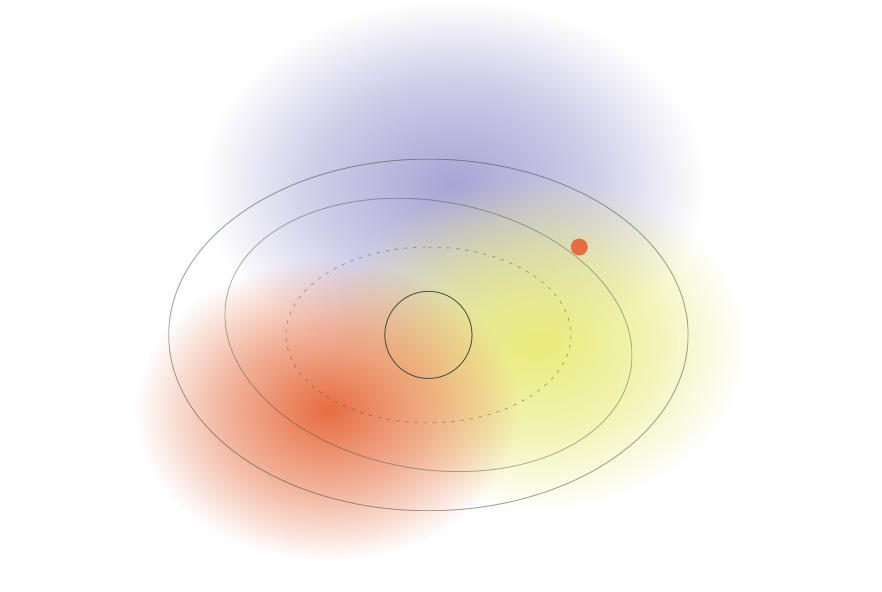
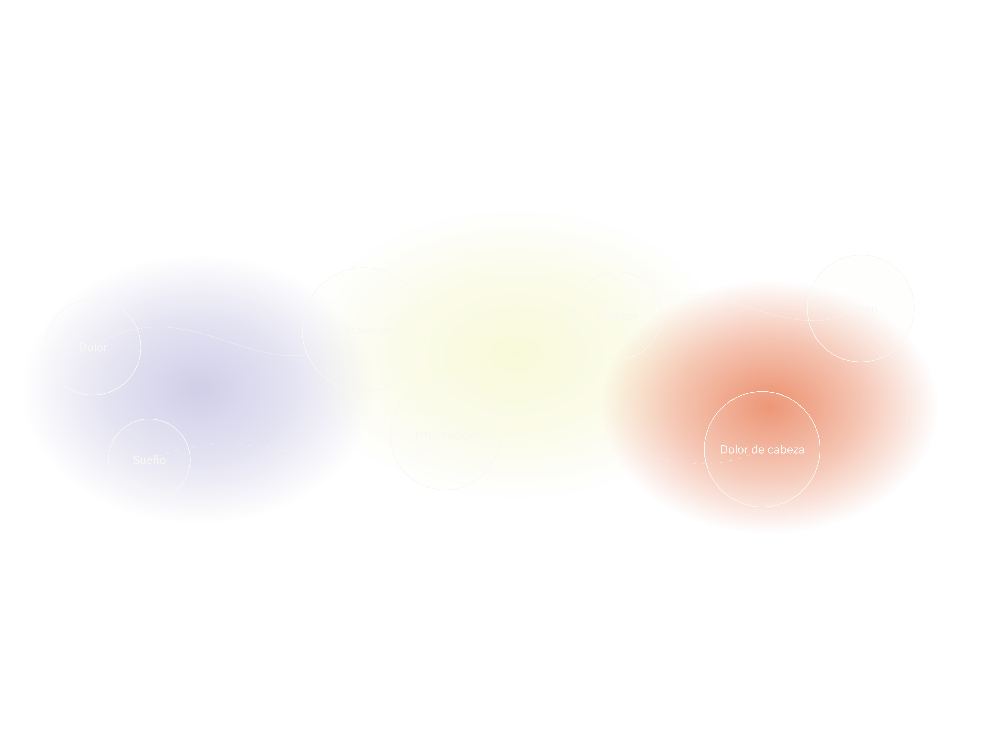
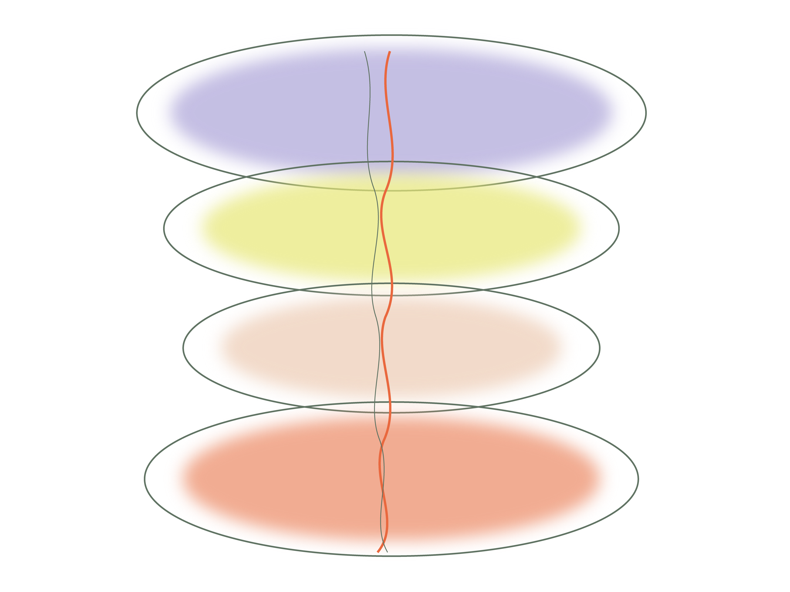
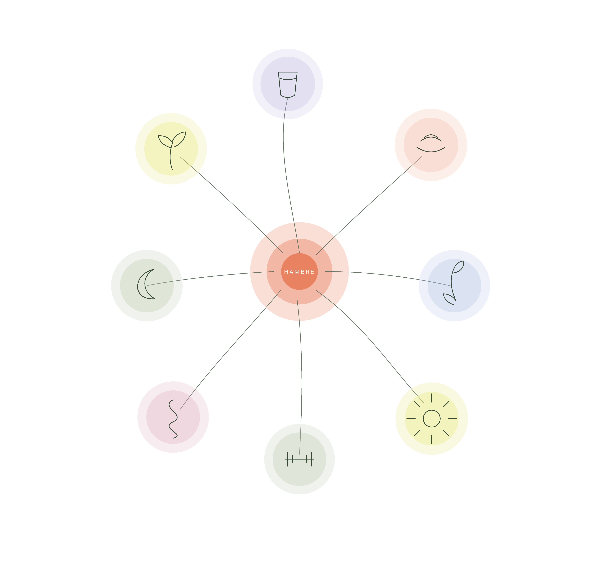

01 — TU CUERPO PRODUCE INFORMACIÓN

Lo que sientes
también importa
Hay cambios que ocurren antes de que puedas verlos.
Sigue una sensación y descubre algunas relaciones
que pueden existir detrás de ella.

02 — EMPIEZA POR ALGO QUE RECONOCES
¿Qué estás sintiendo?
No necesitas saber el nombre de una hormona para empezar a observar tu cuerpo.


